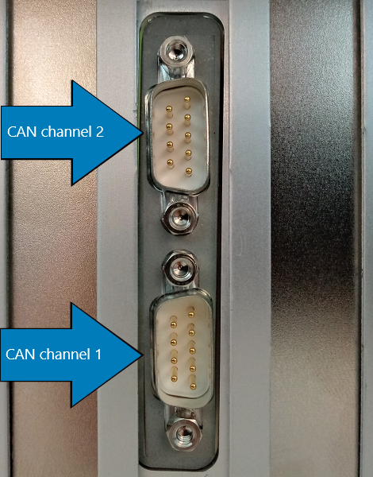

IO610 Pin Mapping
IO610 Pin Mapping — Reference information about the I/O module connector
Channel Location
When plugged into a Speedgoat Performance target machine, the channels are ordered as shown below:

For other machines, please refer to the orientation of the DB9 connectors.
Connector Pin Mapping
The following figure shows the pin numbering of a DB9 connector when looking from the front (outside of the target machine).

The pin mapping of the two connectors is identical and is listed in the following table:
| Pin | Signal | Condition |
|---|---|---|
| 1 | - | |
| 2 | CAN Low | CAN channel configured High Speed (HS) or Flexible Data-rate (FD) |
| 3 | GND | |
| 4 | - | |
| 5 | - | |
| 6 | - | |
| 7 | CAN High | CAN channel configured High Speed (HS) or Flexible Data-rate (FD) |
| 8 | - | |
| 9 | - |
For proper operation, a CAN topology requires electrical termination in the form of resistors.
The IO610 I/O module does not include termination resistors. The full resistor comes with the CAN module loopback cable provided by Speedgoat.